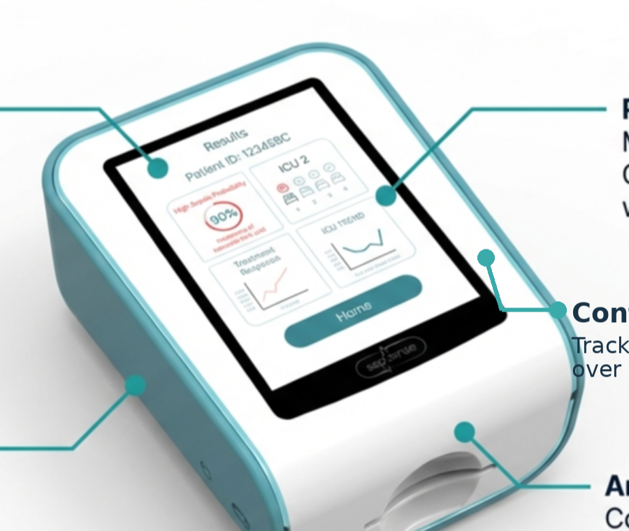
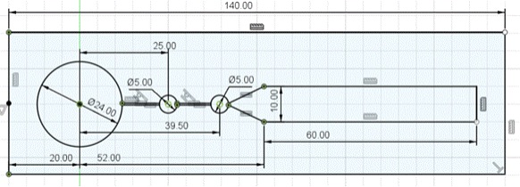

Validation-stage medtech platform
Rapid bedside IL-6 testing with optical self-calibration.
Sepsensor is developing a compact fluorescence reader plus disposable microfluidic cartridge designed to deliver IL-6 results in under 30 minutes near the patient. The central differentiator is a built-in calibration reference intended to reduce drift, cartridge-to-cartridge variation, and read-condition variability.
Current stage: functional prototype under test

Why believe it now
- Founded in 2022 to commercialise a self-calibrating sepsis biosensor platform.
- Functional prototype under testing, with data collection underway for validation and IP development.
- Current experiments run through University of Glasgow-linked lab collaboration.
- Supported by £40,000 from Infinity G and Wilson’s Foundry to help build a functional prototype.
Why now
The workflow gap is not only diagnostic. It is operational.
Sepsensor is being built around a simple clinical-commercial problem: when biomarker results arrive hours later, treatment and observation decisions are already being made. That weakens the value of the signal and increases pressure on teams, pathways, and hospital resources.
Delayed biomarker action
The challenge is not simply diagnosis in the abstract. It is whether the biomarker result can arrive while escalation, observation, and antibiotic decisions are still open.
Central-lab dependence
Lab batching and turnaround can push early-stage sepsis decisions back toward conservative treatment rather than informed bedside response.
Variation limits decentralisation
Point-of-care testing is only useful if the system can handle cartridge variation, optical drift, and read-condition changes without becoming calibration-heavy in daily use.
Why IL-6 first
A disciplined first assay, not a vague platform story.
Sepsensor is not trying to launch with an undifferentiated biomarker panel. The first focus is IL-6 because it gives the team a clinically relevant, technically specific starting point for validating the reader, cartridge workflow, and calibration architecture.
Clinically relevant first signal
Project materials consistently position IL-6 as a strong marker for sepsis severity and outcome tracking, making it a credible first assay target rather than a placeholder biomarker.
Focused validation pathway
Starting with one assay makes it easier to validate optics, surface chemistry, cartridge flow, and signal-processing logic before expanding toward multi-marker use.
Sharper commercial wedge
IL-6-first gives Sepsensor a clearer translational story for clinical collaborators, grant reviewers, and early partners than a broad “future platform” message alone.
Technology
The differentiator is not just fluorescence. It is how the read is stabilised.
Sepsensor combines a reader, a disposable cartridge, fluorescence imaging, and signal processing. The feature that should be easiest to remember is the self-calibration layer built into the assay logic itself.
Plain-English workflow
Blood sample enters cartridge
→
Reader captures fluorescence image
→
IL-6 detection signal
Calibration reference signal
→
Ratio-corrected output for a more stable read
The goal is to compare the assay signal against a reference inside the same workflow, rather than depending on external recalibration every time conditions shift.
How self-calibration works
In plain terms, Sepsensor is designed so the test read includes both a biomarker signal and a reference signal. Comparing the two helps correct for variation caused by cartridge build, optical drift, or read conditions.
Technical explanation
Project materials describe a dedicated calibration fluorophore linked into the assay architecture. The reader uses a ratiometric comparison between detection and calibration channels to compensate for measurement and manufacturing variation.
What we are not claiming
The site is not presenting clinical performance numbers, diagnostic accuracy claims, or regulatory approval status. The current position is validation-stage prototype development.
Platform and differentiation
Reader, cartridge, optical path, and workflow fit.
The platform story becomes stronger when the reader architecture, cartridge workflow, and workflow advantage are described together, not as separate pieces of jargon.

Reader
A compact fluorescence reader captures the assay image and feeds the signal-processing workflow.
Disposable cartridge
The cartridge contains the test path and sample operations, keeping the hardware reusable while preserving a practical point-of-care format.

Why Sepsensor is different
Workflow question
Typical central-lab dependence
Sepsensor target approach
Where the result is generated
Centralised workflow and batching
Near-patient fluorescence readout
Turnaround ambition
Hours-scale result path
Under-30-minute bedside target
Managing variation
External quality control burden remains high
Built-in calibration reference designed into the assay
Platform direction
Single workflow, limited bedside flexibility
IL-6 first, broader biomarker path later
Development stage
Concrete progress, without pretending the device is finished.
Sepsensor should read as a serious translation-stage startup: something real has been built and tested, but the project is still in prototype validation rather than commercial deployment.
Current status
Sepsensor is a prototype platform in validation. It is not yet a commercially approved medical device.
- Functional prototype under testing
- Assay chemistry and binding workflow under active development
- University lab collaboration supporting current experiments
- Current focus on internal validation, partner building, and pilot readiness
Founded in 2022
Created to commercialise a self-calibrating biosensor for rapid sepsis testing.
Functional prototype developed
Project materials state that a functional prototype has been built and is being tested.
Current lab validation work
University of Glasgow-linked experiments continue to support assay and optical validation.
Cartridge and casing iteration
Cartridge formats and enclosure files have been iterated alongside the reader concept.
£40,000 programme support
Infinity G and Wilson’s Foundry support helped fund prototype-building and business development.
Next milestone
Prototype validation with lab data, deeper partnerships, and preparation for pilot-ready translation.
Use cases and partnership pathways
Clear reasons for different audiences to engage.
The site should not ask every visitor to care for the same reason. Sepsensor is relevant to clinical collaborators, technical partners, and translational supporters in different ways.
Where the platform could fit first
- Emergency and acute care workflows where faster biomarker input may influence escalation.
- ICU or ward-based monitoring support where serial bedside reads could be useful.
- Hospital workflows that need decentralised turnaround rather than central-lab batching.
- Future multi-biomarker expansion once the IL-6-first architecture is validated.
Who Sepsensor wants to hear from
- Clinical collaborators who can help shape validation and workflow fit.
- Assay development and bioengineering partners with surface chemistry expertise.
- Microfluidics, cartridge, and manufacturing partners for translation beyond the lab.
- Accelerators, grant reviewers, and early supporters focused on translational medtech.
Team and advisors
Assay, optics, electronics, chemistry, and translation in one group.
The project materials present Sepsensor as a multidisciplinary effort, combining biosensor development with engineering, electronics, and academic guidance rather than treating it as a single-discipline research exercise.
Yazan Haidar
Bio-assay and external programme leadership.
Abdullah AlFakhrey
Detection system, imaging workflow, and prototype integration.
Tao Xu
Surface chemistry and assay development.
Jaswinder Singh
Electronics and supporting system development.
Prof. Julien Reboud
Scientific advisor supporting assay and translational direction.
Contact
Looking for clinical, technical, and translational partners.
Sepsensor is currently best suited to conversations around validation, assay development, pilot planning, microfluidics, manufacturing, and medtech translation support.